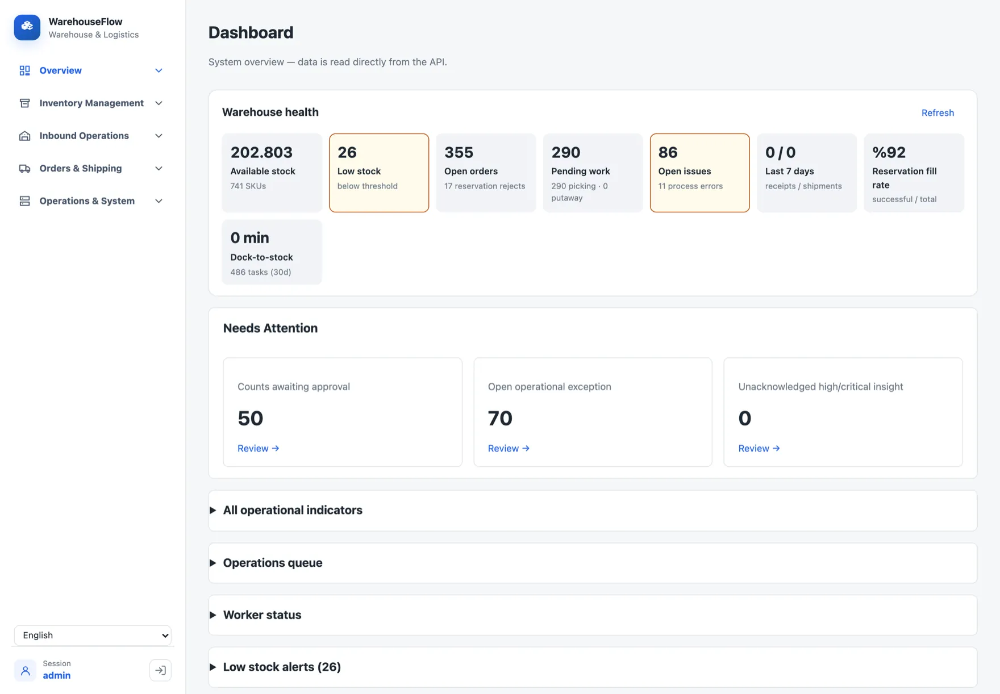
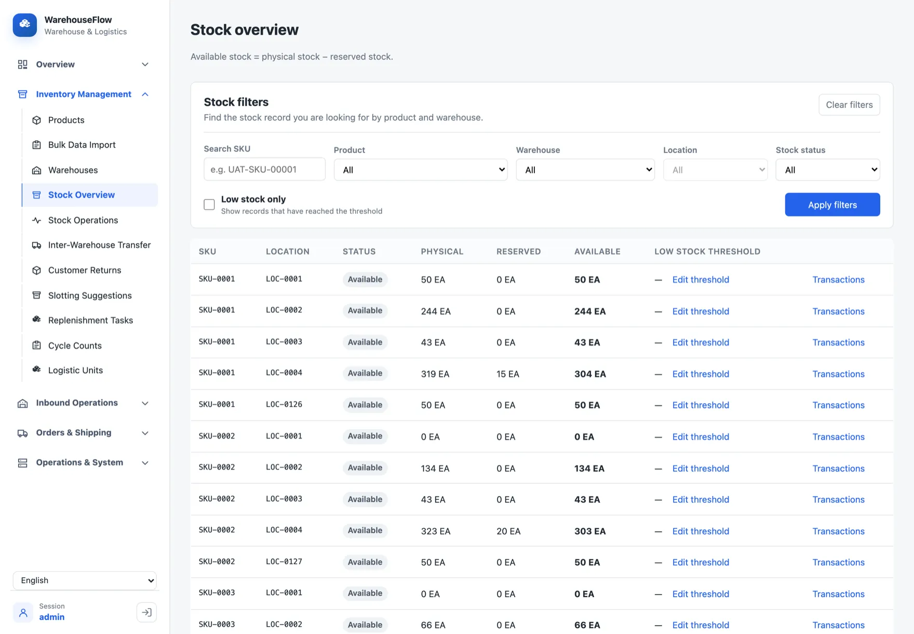
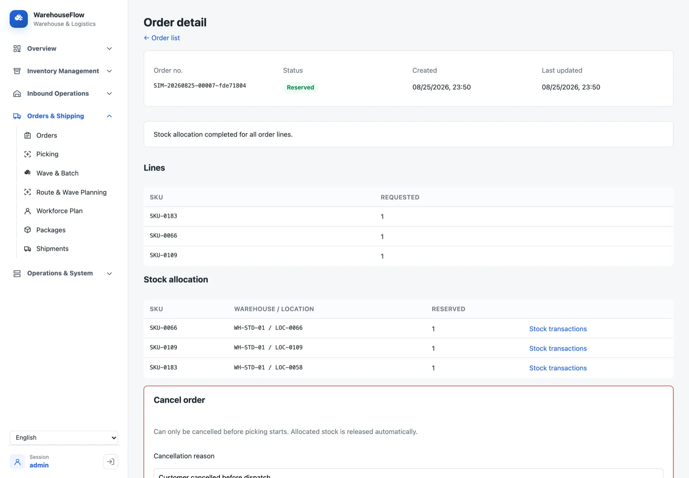
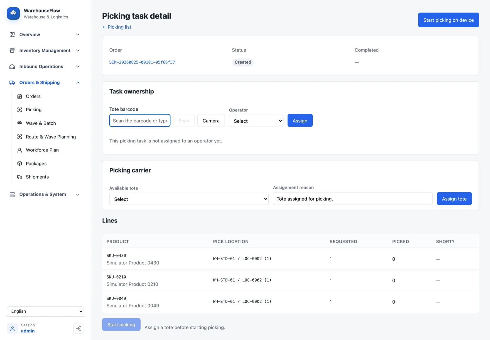
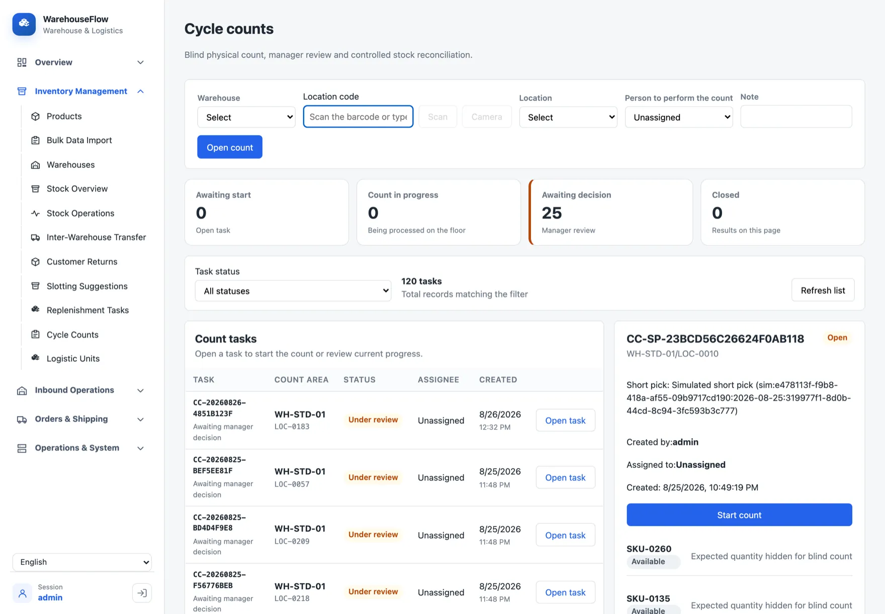
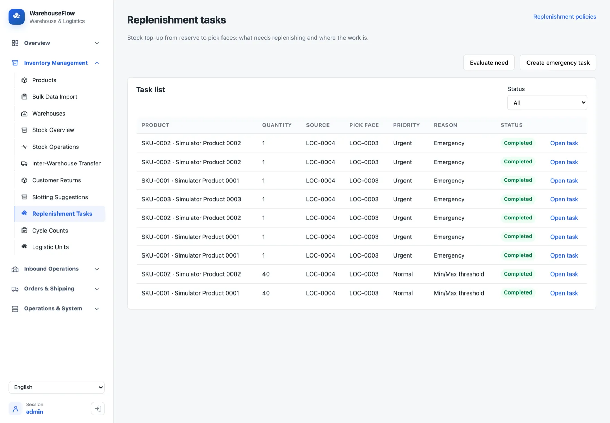
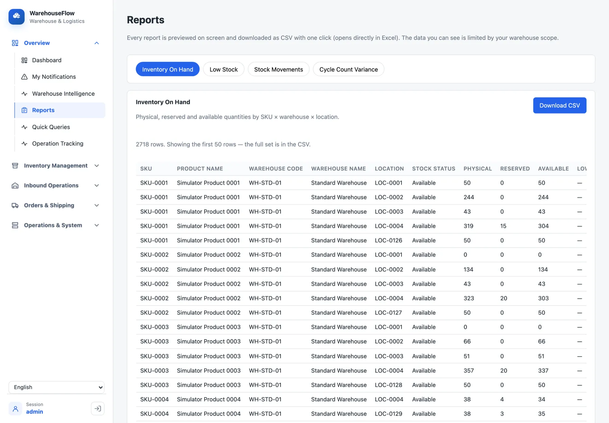
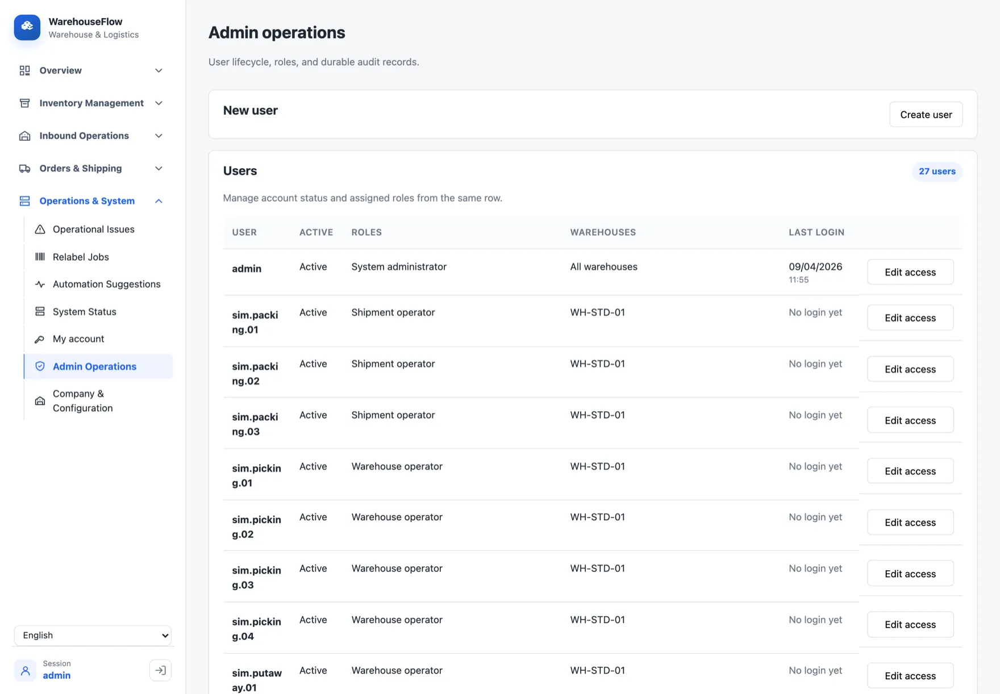
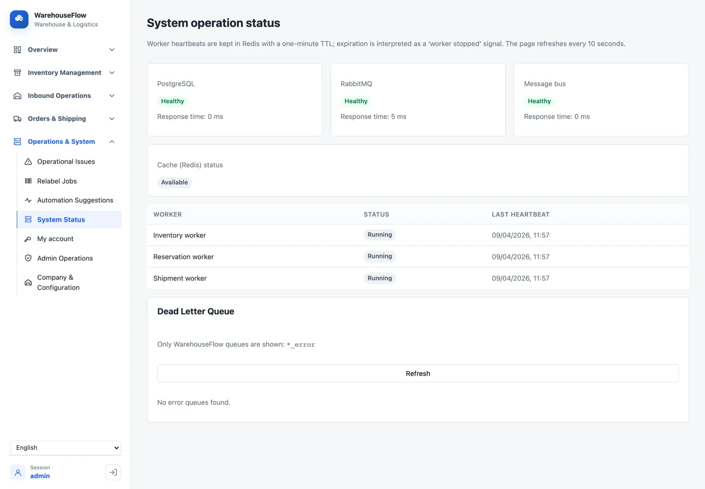

<meta charset="utf-8" />
<meta name="viewport" content="width=device-width, initial-scale=1" />
<title>WarehouseFlow</title>
<meta name="description" content="Design walkthrough of an event-driven warehouse management system — architecture, reliability patterns, and the full feature surface." />
<link rel="preconnect" href="https://fonts.googleapis.com" />
<link rel="preconnect" href="https://fonts.gstatic.com" crossorigin />
<link href="https://fonts.googleapis.com/css2?family=Archivo:wght@500;600;700;800&family=IBM+Plex+Mono:wght@400;500;600&family=IBM+Plex+Sans:wght@400;500;600&display=swap" rel="stylesheet" />

<style>
  :root {
    --paper:#f5f3ee; --panel:#faf9f5; --panel-2:#efece3;
    --ink:#1b1d22; --ink-soft:#5b5f68;
    --line:#ddd7c9; --line-soft:#e7e2d6;
    --accent:#d15c2b; --accent-ink:#ffffff;
    --cool:#35576b; --cool-fill:#e4eaed;
    --good:#2f7d55; --warn:#9c7418; --crit:#b23b3b;
    --measure:63ch;
  }
  @media (prefers-color-scheme: dark) {
    :root:not([data-theme="light"]) {
      --paper:#141619; --panel:#1b1e23; --panel-2:#2b313a;
      --ink:#e9e6dd; --ink-soft:#9aa0a9;
      --line:#333a44; --line-soft:#262b32;
      --accent:#ef7643; --accent-ink:#15171a;
      --cool:#8fb4c6; --cool-fill:#28353f;
      --good:#5cb98a; --warn:#d3a748; --crit:#dd7676;
    }
  }
  :root[data-theme="dark"] {
    --paper:#141619; --panel:#1b1e23; --panel-2:#2b313a;
    --ink:#e9e6dd; --ink-soft:#9aa0a9;
    --line:#333a44; --line-soft:#262b32;
    --accent:#ef7643; --accent-ink:#15171a;
    --cool:#8fb4c6; --cool-fill:#28353f;
    --good:#5cb98a; --warn:#d3a748; --crit:#dd7676;
  }

  * { box-sizing: border-box; }
  html { -webkit-text-size-adjust: 100%; }
  body {
    margin: 0;
    background: var(--paper);
    color: var(--ink);
    font-family: "IBM Plex Sans", ui-sans-serif, system-ui, sans-serif;
    font-size: 1.02rem;
    line-height: 1.62;
    -webkit-font-smoothing: antialiased;
  }
  a { color: inherit; text-decoration-color: var(--accent); text-underline-offset: 3px; }
  a:focus-visible, button:focus-visible { outline: 2px solid var(--accent); outline-offset: 3px; border-radius: 2px; }

  .wrap { width: 100%; max-width: 1120px; margin-inline: auto; padding-inline: clamp(1.15rem, 4vw, 2.75rem); }

  /* ---- header ---- */
  .topbar {
    display: flex; align-items: center; justify-content: space-between;
    border-bottom: 1px solid var(--line);
    font-family: "IBM Plex Mono", ui-monospace, monospace;
    font-size: .72rem; letter-spacing: .16em; text-transform: uppercase;
    padding-block: 1rem;
  }
  .topbar .mark { font-weight: 600; letter-spacing: .1em; }
  .topbar .tag { color: var(--ink-soft); }
  .topbar .tag b { color: var(--accent); font-weight: 600; }

  /* ---- section frame ---- */
  section { border-top: 1px solid var(--line); }
  section:first-of-type { border-top: 0; }
  .sec { padding-block: clamp(3.25rem, 8vw, 5.75rem); }
  .eyebrow {
    font-family: "IBM Plex Mono", ui-monospace, monospace;
    font-size: .74rem; font-weight: 500; letter-spacing: .18em; text-transform: uppercase;
    color: var(--ink-soft);
    margin: 0 0 1.1rem;
    display: flex; align-items: baseline; gap: .7rem; flex-wrap: wrap;
  }
  .eyebrow b { color: var(--accent); font-weight: 600; }
  h2 {
    font-family: "Archivo", sans-serif; font-weight: 700;
    font-size: clamp(1.6rem, 3.2vw, 2.3rem); line-height: 1.08;
    letter-spacing: -0.015em; text-wrap: balance;
    margin: 0 0 1rem;
  }
  h3 {
    font-family: "Archivo", sans-serif; font-weight: 600;
    font-size: 1.08rem; letter-spacing: -0.005em;
    margin: 0 0 .5rem;
  }
  p { margin: 0 0 1rem; max-width: var(--measure); }
  .sec > .wrap > p:last-child { margin-bottom: 0; }
  .dim { color: var(--ink-soft); }
  code, .mono {
    font-family: "IBM Plex Mono", ui-monospace, monospace;
    font-size: .88em;
  }
  code { background: var(--panel-2); padding: .1em .38em; border-radius: 3px; }

  /* ---- hero ---- */
  .hero { padding-block: clamp(3rem, 9vw, 6rem) clamp(3rem, 7vw, 4.5rem); }
  .hero h1 {
    font-family: "Archivo", sans-serif; font-weight: 800;
    font-size: clamp(2.7rem, 8vw, 4.6rem); line-height: 0.98;
    letter-spacing: -0.03em; margin: 0 0 1.1rem; text-wrap: balance;
  }
  .hero .lede {
    font-size: clamp(1.08rem, 2.2vw, 1.3rem); line-height: 1.5;
    max-width: 40ch; color: var(--ink); margin-bottom: 1.6rem;
  }
  .hero .lede .hl { color: var(--accent); }
  .chips { display: flex; flex-wrap: wrap; gap: .5rem; margin-bottom: 1.5rem; }
  .chip {
    font-family: "IBM Plex Mono", ui-monospace, monospace;
    font-size: .74rem; letter-spacing: .04em;
    border: 1px solid var(--line); border-radius: 999px;
    padding: .28rem .7rem; color: var(--ink-soft);
    white-space: nowrap;
  }
  .runline {
    font-family: "IBM Plex Mono", ui-monospace, monospace;
    font-size: .82rem; color: var(--ink-soft);
    border-left: 2px solid var(--accent); padding-left: .85rem;
    max-width: var(--measure);
  }
  .runline b { color: var(--ink); font-weight: 500; }

  /* ---- diagrams ---- */
  figure { margin: 0; }
  .diagram {
    margin-top: 2rem;
    overflow-x: auto;
    color: var(--ink);
    background: var(--panel);
    border: 1px solid var(--line);
    border-radius: 6px;
    padding: clamp(1rem, 3vw, 1.9rem);
  }
  .diagram svg { display: block; width: 100%; min-width: 560px; height: auto; }
  .diagram.tight svg { min-width: 440px; }
  figcaption {
    font-family: "IBM Plex Mono", ui-monospace, monospace;
    font-size: .74rem; letter-spacing: .04em; color: var(--ink-soft);
    margin-top: .85rem; max-width: var(--measure);
  }
  .svg-box { fill: var(--panel-2); stroke: var(--line); stroke-width: 1.5; }
  .svg-box-cool { fill: var(--cool-fill); stroke: var(--cool); stroke-width: 1.5; }
  .svg-box-accent { fill: none; stroke: var(--accent); stroke-width: 1.75; }
  .svg-t { fill: var(--ink); font-family: "IBM Plex Sans", sans-serif; font-size: 13px; }
  .svg-m { fill: var(--ink); font-family: "IBM Plex Mono", monospace; font-size: 11.5px; }
  .svg-lbl { fill: var(--ink-soft); font-family: "IBM Plex Mono", monospace; font-size: 10.5px; letter-spacing: .04em; }
  .svg-flow { stroke: var(--ink-soft); stroke-width: 1.5; fill: none; }
  .svg-flow-accent { stroke: var(--accent); stroke-width: 2; fill: none; }

  /* ---- manifest (stats) ---- */
  .manifest { display: grid; grid-template-columns: repeat(auto-fit, minmax(210px, 1fr)); gap: 0; }
  .m-row {
    border-top: 1px solid var(--line);
    padding: 1.1rem 1.4rem 1.1rem 0;
  }
  .m-num {
    font-family: "IBM Plex Mono", ui-monospace, monospace;
    font-size: clamp(1.5rem, 3.2vw, 2rem); font-weight: 500;
    font-variant-numeric: tabular-nums; letter-spacing: -0.02em;
    line-height: 1; margin-bottom: .5rem; display: block;
  }
  .m-num .u { color: var(--accent); }
  .m-txt { font-size: .9rem; color: var(--ink-soft); line-height: 1.4; }

  /* ---- problems ---- */
  .problem { padding-block: clamp(2.25rem, 5vw, 3rem); border-top: 1px dashed var(--line); }
  .problem:first-of-type { border-top: 0; padding-top: .5rem; }
  .p-kick {
    font-family: "IBM Plex Mono", ui-monospace, monospace;
    font-size: .74rem; letter-spacing: .1em; text-transform: uppercase;
    color: var(--accent); margin-bottom: .6rem;
  }
  .ladder { list-style: none; margin: 1.4rem 0 0; padding: 0; display: flex; flex-direction: column; gap: 2px; }
  .ladder li {
    display: grid; grid-template-columns: 2.4rem 1fr; gap: .9rem; align-items: start;
    background: var(--panel); border: 1px solid var(--line);
    padding: .75rem .95rem;
  }
  .ladder li .n {
    font-family: "IBM Plex Mono", monospace; font-size: .8rem; color: var(--ink-soft);
    font-variant-numeric: tabular-nums; padding-top: .1rem;
  }
  .ladder li b { font-family: "Archivo", sans-serif; font-weight: 600; font-size: .96rem; }
  .ladder li span { display: block; font-size: .88rem; color: var(--ink-soft); }
  .ladder li:nth-child(4) { border-color: var(--accent); }
  .ladder li:last-child { background: var(--panel-2); }

  /* ---- feature columns ---- */
  .fcols { display: grid; grid-template-columns: repeat(auto-fit, minmax(250px, 1fr)); gap: 1.75rem 2.25rem; }
  .fcol h3 {
    padding-bottom: .55rem; margin-bottom: .7rem;
    border-bottom: 1px solid var(--accent);
    display: flex; align-items: baseline; gap: .55rem;
  }
  .fcol h3 .ix { font-family: "IBM Plex Mono", monospace; font-size: .74rem; color: var(--ink-soft); font-weight: 400; }
  .fcol ul { list-style: none; margin: 0; padding: 0; display: flex; flex-direction: column; gap: .45rem; }
  .fcol li { font-size: .92rem; line-height: 1.4; padding-left: 1rem; position: relative; }
  .fcol li::before { content: "—"; position: absolute; left: 0; color: var(--cool); }

  /* ---- practice / stack ---- */
  .split { display: grid; grid-template-columns: 1fr; gap: 2rem; }
  @media (min-width: 820px) { .split { grid-template-columns: 1.15fr .85fr; gap: 3rem; } }
  .plist { display: flex; flex-direction: column; gap: 1.15rem; }
  .plist h3 { margin-bottom: .3rem; }
  .plist p { font-size: .93rem; margin: 0; }

  .stack-group { border-top: 1px solid var(--line); padding-top: .8rem; margin-top: .8rem; }
  .stack-group:first-child { border-top: 0; margin-top: 0; padding-top: 0; }
  .stack-group .k {
    font-family: "IBM Plex Mono", monospace; font-size: .72rem; letter-spacing: .12em;
    text-transform: uppercase; color: var(--ink-soft); margin-bottom: .55rem;
  }
  .stack-group .v { display: flex; flex-wrap: wrap; gap: .4rem; }

  /* ---- footer ---- */
  footer { border-top: 1px solid var(--line); background: var(--panel); }
  .foot-grid { display: grid; grid-template-columns: 1fr; gap: 2rem; padding-block: clamp(2.75rem, 6vw, 4rem); }
  @media (min-width: 760px) { .foot-grid { grid-template-columns: 1.3fr .7fr; } }
  .foot-note p { font-size: .95rem; }
  .foot-links { display: flex; flex-direction: column; gap: .55rem; }
  .foot-links .k { font-family: "IBM Plex Mono", monospace; font-size: .72rem; letter-spacing: .12em; text-transform: uppercase; color: var(--ink-soft); margin-bottom: .3rem; }
  .foot-links a { font-size: .92rem; }
  .foot-run {
    font-family: "IBM Plex Mono", monospace; font-size: .8rem; color: var(--ink-soft);
    margin-top: 1.2rem; padding: .8rem .95rem; background: var(--panel-2);
    border: 1px solid var(--line); border-radius: 4px; overflow-x: auto;
  }
  .foot-run b { color: var(--ink); font-weight: 500; }

  /* ---- screenshots ---- */
  .shots { display: grid; gap: 1.6rem 1.8rem; grid-template-columns: 1fr; }
  @media (min-width: 900px) { .shots { grid-template-columns: repeat(2, 1fr); } }
  .shot { margin: 0; }
  .shot-frame {
    border: 1px solid var(--line); border-radius: 8px; overflow: hidden;
    background: var(--panel);
  }
  .shot-bar {
    display: flex; align-items: center; gap: .38rem;
    padding: .5rem .7rem; border-bottom: 1px solid var(--line); background: var(--panel-2);
  }
  .shot-bar i { width: 8px; height: 8px; border-radius: 50%; background: var(--line); flex: none; }
  .shot-bar .path {
    font-family: "IBM Plex Mono", monospace; font-size: .72rem; color: var(--ink-soft);
    margin-left: .4rem; overflow: hidden; text-overflow: ellipsis; white-space: nowrap;
  }
  .shot-frame img { display: block; width: 100%; height: auto; }
  .shot figcaption { margin-top: .7rem; font-size: .88rem; color: var(--ink-soft); line-height: 1.45; max-width: none; }
  .shot figcaption b {
    display: block; margin-bottom: .12rem;
    font-family: "Archivo", sans-serif; font-weight: 600; font-size: .96rem; color: var(--ink);
  }
  .flowclip { margin: 0 0 2.1rem; }
  .flowclip .shot-frame video { display: block; width: 100%; height: auto; background: #0d0f12; }
  .flowclip figcaption { margin-top: .75rem; font-size: .9rem; color: var(--ink-soft); line-height: 1.5; }
  .flowclip figcaption b {
    display: block; margin-bottom: .15rem;
    font-family: "Archivo", sans-serif; font-weight: 600; font-size: 1rem; color: var(--ink);
  }

  @media (prefers-reduced-motion: no-preference) {
    .dash-anim { stroke-dasharray: 5 5; animation: dash 1.1s linear infinite; }
    @keyframes dash { to { stroke-dashoffset: -20; } }
  }
</style>

<header>
  <div class="wrap topbar">
    <span class="mark">WAREHOUSEFLOW</span>
    <span class="tag">Source&nbsp;·&nbsp;<b>Private</b></span>
  </div>
</header>

<main>

  <!-- HERO -->
  <section>
    <div class="wrap hero">
      <p class="eyebrow">Warehouse Management System — Portfolio Project</p>
      <h1>Goods in at the dock, orders out the door.</h1>
      <p class="lede">An event-driven WMS that moves stock through <span class="hl">receiving → putaway → reservation → picking → packing → shipping</span> — and keeps the numbers correct when two operators grab the last unit at the same moment.</p>
      <div class="chips">
        <span class="chip">.NET 10</span>
        <span class="chip">Vue 3</span>
        <span class="chip">PostgreSQL 17</span>
        <span class="chip">RabbitMQ</span>
        <span class="chip">Redis</span>
        <span class="chip">Docker Compose</span>
      </div>
      <p class="runline"><b>docker compose up</b> — API, four workers, database, broker, cache and the SPA on one machine. No cloud account, no API keys, no external service anywhere in the design.</p>

      <figure class="diagram">
        <svg viewBox="0 0 940 168" role="img" aria-label="The goods flow: purchase order, receiving, putaway, inventory, reservation, picking, packing, shipping, with transfer and cycle-count loops and a returns path back into inventory.">
          <defs>
            <marker id="ah" viewBox="0 0 10 10" refX="8" refY="5" markerWidth="7" markerHeight="7" orient="auto-start-reverse">
              <path d="M0,0 L10,5 L0,10 z" fill="var(--ink-soft)"></path>
            </marker>
            <marker id="aha" viewBox="0 0 10 10" refX="8" refY="5" markerWidth="7" markerHeight="7" orient="auto-start-reverse">
              <path d="M0,0 L10,5 L0,10 z" fill="var(--accent)"></path>
            </marker>
          </defs>
          <!-- stations -->
          <g>
            <rect class="svg-box" x="6"   y="52" width="96" height="44" rx="4"></rect>
            <text class="svg-m" x="54"  y="78" text-anchor="middle">PO</text>
            <rect class="svg-box" x="122" y="52" width="96" height="44" rx="4"></rect>
            <text class="svg-m" x="170" y="74" text-anchor="middle">receiving</text>
            <rect class="svg-box" x="238" y="52" width="96" height="44" rx="4"></rect>
            <text class="svg-m" x="286" y="74" text-anchor="middle">putaway</text>
            <rect class="svg-box-cool" x="354" y="52" width="104" height="44" rx="4"></rect>
            <text class="svg-m" x="406" y="70" text-anchor="middle">inventory</text>
            <text class="svg-lbl" x="406" y="85" text-anchor="middle">phys / resv</text>
            <rect class="svg-box-accent" x="478" y="52" width="104" height="44" rx="4"></rect>
            <text class="svg-m" x="530" y="70" text-anchor="middle">reserve</text>
            <text class="svg-lbl" x="530" y="85" text-anchor="middle">multi-loc</text>
            <rect class="svg-box" x="602" y="52" width="96" height="44" rx="4"></rect>
            <text class="svg-m" x="650" y="74" text-anchor="middle">picking</text>
            <rect class="svg-box" x="718" y="52" width="96" height="44" rx="4"></rect>
            <text class="svg-m" x="766" y="74" text-anchor="middle">packing</text>
            <rect class="svg-box" x="834" y="52" width="100" height="44" rx="4"></rect>
            <text class="svg-m" x="884" y="74" text-anchor="middle">shipping</text>
          </g>
          <!-- connectors -->
          <g>
            <line class="svg-flow" x1="102" y1="74" x2="120" y2="74" marker-end="url(#ah)"></line>
            <line class="svg-flow" x1="218" y1="74" x2="236" y2="74" marker-end="url(#ah)"></line>
            <line class="svg-flow" x1="334" y1="74" x2="352" y2="74" marker-end="url(#ah)"></line>
            <line class="svg-flow-accent" x1="458" y1="74" x2="476" y2="74" marker-end="url(#aha)"></line>
            <line class="svg-flow-accent" x1="582" y1="74" x2="600" y2="74" marker-end="url(#aha)"></line>
            <line class="svg-flow" x1="698" y1="74" x2="716" y2="74" marker-end="url(#ah)"></line>
            <line class="svg-flow" x1="814" y1="74" x2="832" y2="74" marker-end="url(#ah)"></line>
          </g>
          <!-- loops -->
          <path class="svg-flow" d="M300,52 C300,20 360,20 380,50" marker-end="url(#ah)"></path>
          <text class="svg-lbl" x="330" y="18" text-anchor="middle">transfer</text>
          <path class="svg-flow" d="M430,96 C430,128 372,128 360,98" marker-end="url(#ah)"></path>
          <text class="svg-lbl" x="392" y="146" text-anchor="middle">cycle count</text>
          <path class="svg-flow" d="M884,96 C884,140 420,150 408,100" marker-end="url(#ah)"></path>
          <text class="svg-lbl" x="650" y="150" text-anchor="middle">customer return</text>
          <!-- rail labels -->
          <text class="svg-lbl" x="6" y="30">INBOUND</text>
          <text class="svg-lbl" x="478" y="30" fill="var(--accent)">ASYNC · CONCURRENCY-CRITICAL</text>
        </svg>
        <figcaption>The operational core. Every arrow that changes stock is written to an append-only ledger and attributed to the operator who triggered it.</figcaption>
      </figure>
    </div>
  </section>

  <!-- MANIFEST -->
  <section>
    <div class="wrap sec">
      <p class="eyebrow"><b>00</b> — By the numbers</p>
      <div class="manifest">
        <div class="m-row"><span class="m-num">44<span class="u">k</span></span><span class="m-txt">lines of application C# across 11 services (excl. generated migrations)</span></div>
        <div class="m-row"><span class="m-num">1,300<span class="u">+</span></span><span class="m-txt">automated tests — backend, simulator, frontend &amp; E2E; 791 of them backend against real PostgreSQL &amp; RabbitMQ</span></div>
        <div class="m-row"><span class="m-num">24<span class="u">k</span></span><span class="m-txt">lines of Vue 3 + TypeScript · 60+ operator and manager screens</span></div>
        <div class="m-row"><span class="m-num">13</span><span class="m-txt">MassTransit consumers across the .NET worker services · deterministic 30 / 90 / 365-day simulator runs</span></div>
        <div class="m-row"><span class="m-num">107<span class="u">k</span></span><span class="m-txt">words of design documentation · 30 architecture decision records</span></div>
        <div class="m-row"><span class="m-num">0</span><span class="m-txt">external runtime dependencies — no SMTP, SMS, maps, payment or third-party AI</span></div>
      </div>
    </div>
  </section>

  <!-- ARCHITECTURE -->
  <section>
    <div class="wrap sec">
      <p class="eyebrow"><b>01</b> — How it's built</p>
      <h2>Accept fast, process asynchronously, keep one source of truth</h2>
      <p>The API validates a request, writes the domain change, and returns <code>202 Accepted</code> for anything that touches stock. Four .NET worker services do the real work off a RabbitMQ queue — <strong>13 MassTransit consumers</strong> across three of them, plus a scheduled analysis runner. PostgreSQL is the single source of operational truth; Redis is a cache and a best-effort lock, never authoritative — a Redis outage is <em>degraded</em>, not <em>down</em>.</p>

      <figure class="diagram">
        <svg viewBox="0 0 940 400" role="img" aria-label="Architecture. The Vue SPA calls the API. The API writes domain state and an outbox message to PostgreSQL in one transaction, and uses Redis for cache and locks. A polling publisher moves messages to RabbitMQ. Four workers — inventory, order and reservation, shipment, intelligence — consume commands and write back to PostgreSQL along the bottom.">
          <defs>
            <marker id="a2" viewBox="0 0 10 10" refX="8" refY="5" markerWidth="7" markerHeight="7" orient="auto-start-reverse"><path d="M0,0 L10,5 L0,10 z" fill="var(--ink-soft)"></path></marker>
            <marker id="a2a" viewBox="0 0 10 10" refX="8" refY="5" markerWidth="7" markerHeight="7" orient="auto-start-reverse"><path d="M0,0 L10,5 L0,10 z" fill="var(--accent)"></path></marker>
          </defs>

          <text class="svg-lbl" x="16" y="120">CLIENT</text>
          <text class="svg-lbl" x="392" y="70" fill="var(--accent)">SINGLE SOURCE OF TRUTH</text>
          <text class="svg-lbl" x="628" y="120" fill="var(--accent)">ASYNC TRANSPORT</text>

          <rect class="svg-box" x="16" y="136" width="118" height="50" rx="4"></rect>
          <text class="svg-t" x="75" y="166" text-anchor="middle">Vue 3 SPA</text>

          <rect class="svg-box-cool" x="188" y="130" width="150" height="62" rx="4"></rect>
          <text class="svg-t" x="263" y="156" text-anchor="middle">ASP.NET Core API</text>
          <text class="svg-lbl" x="263" y="175" text-anchor="middle">validate · 202</text>

          <rect class="svg-box" x="392" y="82" width="172" height="158" rx="4"></rect>
          <text class="svg-m" x="478" y="106" text-anchor="middle">PostgreSQL</text>
          <line x1="410" y1="120" x2="546" y2="120" stroke="var(--line)" stroke-width="1"></line>
          <text class="svg-lbl" x="478" y="142" text-anchor="middle">domain tables</text>
          <text class="svg-lbl" x="478" y="162" text-anchor="middle" fill="var(--accent)">outbox_messages</text>
          <text class="svg-lbl" x="478" y="182" text-anchor="middle">processed_messages</text>
          <text class="svg-lbl" x="478" y="202" text-anchor="middle">audit_events</text>

          <rect class="svg-box" x="200" y="252" width="126" height="44" rx="4"></rect>
          <text class="svg-m" x="263" y="279" text-anchor="middle">Redis</text>

          <rect class="svg-box-accent" x="628" y="132" width="126" height="56" rx="4"></rect>
          <text class="svg-m" x="691" y="165" text-anchor="middle">RabbitMQ</text>

          <g>
            <rect class="svg-box" x="810" y="60" width="118" height="38" rx="4"></rect>
            <text class="svg-lbl" x="869" y="84" text-anchor="middle">Inventory W.</text>
            <rect class="svg-box" x="810" y="106" width="118" height="38" rx="4"></rect>
            <text class="svg-lbl" x="869" y="130" text-anchor="middle">Order + Resv W.</text>
            <rect class="svg-box" x="810" y="152" width="118" height="38" rx="4"></rect>
            <text class="svg-lbl" x="869" y="176" text-anchor="middle">Shipment W.</text>
            <rect class="svg-box" x="810" y="198" width="118" height="38" rx="4"></rect>
            <text class="svg-lbl" x="869" y="222" text-anchor="middle">Intelligence W.</text>
          </g>

          <!-- client -> api -->
          <line class="svg-flow" x1="134" y1="161" x2="186" y2="161" marker-end="url(#a2)"></line>
          <text class="svg-lbl" x="160" y="153" text-anchor="middle">/api</text>

          <!-- api -> postgres : two writes, one txn -->
          <line class="svg-flow" x1="338" y1="150" x2="390" y2="140" marker-end="url(#a2)"></line>
          <line class="svg-flow-accent" x1="338" y1="170" x2="390" y2="172" marker-end="url(#a2a)"></line>
          <text class="svg-lbl" x="364" y="200" text-anchor="middle" fill="var(--accent)">one txn</text>

          <!-- api <-> redis -->
          <line class="svg-flow" x1="263" y1="192" x2="263" y2="250" marker-end="url(#a2)"></line>
          <text class="svg-lbl" x="273" y="228" text-anchor="start">cache · lock</text>

          <!-- postgres -> rabbitmq : poll -->
          <line class="svg-flow-accent dash-anim" x1="564" y1="160" x2="626" y2="160" marker-end="url(#a2a)"></line>
          <text class="svg-lbl" x="595" y="152" text-anchor="middle" fill="var(--accent)">poll</text>

          <!-- rabbitmq -> the three queue-driven workers -->
          <path class="svg-flow" d="M754,150 C778,120 786,90 808,80" marker-end="url(#a2)"></path>
          <path class="svg-flow" d="M754,160 C778,140 786,128 808,125" marker-end="url(#a2)"></path>
          <path class="svg-flow" d="M754,170 C778,168 786,170 808,171" marker-end="url(#a2)"></path>

          <!-- intelligence worker: scheduled, not queue-driven -->
          <path class="svg-flow" stroke-dasharray="4 3" d="M564,214 C650,214 740,216 808,217" marker-end="url(#a2)"></path>
          <text class="svg-lbl" x="672" y="230" text-anchor="middle">scheduled</text>

          <!-- workers -> postgres : write-back along the bottom -->
          <path class="svg-flow" d="M869,236 L869,344 L478,344 L478,242" marker-end="url(#a2)"></path>
          <text class="svg-lbl" x="620" y="336" text-anchor="middle">workers write back to PostgreSQL (+ their own outbox rows)</text>
        </svg>
        <figcaption>The API never publishes to the broker directly. It writes the message next to the state change; a publisher drains it afterward. That single decision is what the next section is about.</figcaption>
      </figure>
    </div>
  </section>

  <!-- THE HARD PROBLEMS -->
  <section>
    <div class="wrap sec">
      <p class="eyebrow"><b>02</b> — The hard problems</p>
      <h2>Where the project actually earns its keep</h2>
      <p>A CRUD app hides these. An event-driven system has to answer them out loud. Each pattern below is a written decision — context, alternatives, consequences — recorded as an ADR.</p>

      <div class="problem">
        <p class="p-kick">Dual-write → Transactional Outbox</p>
        <h3>A state change and its message commit together, or not at all</h3>
        <p>An API request often has to change the database <em>and</em> tell another service. Do that as two steps and a crash in between either loses the message or fires one for a change that never landed.</p>
        <p>WarehouseFlow writes the domain row and an <code>outbox_messages</code> row in the <em>same</em> PostgreSQL transaction. A separate publisher polls that table with <code>SELECT … FOR UPDATE SKIP LOCKED</code>, sends to RabbitMQ, and only then marks the row done. Loss becomes impossible; the cost is that delivery is now <em>at-least-once</em>.</p>

        <figure class="diagram tight">
          <svg viewBox="0 0 900 210" role="img" aria-label="Left: the naive approach writes to the database, then separately to the broker, and a crash between them loses the message. Right: the outbox approach writes the domain change and the message in one transaction, and a publisher forwards it afterward.">
            <text class="svg-lbl" x="20" y="24">NAIVE — TWO WRITES</text>
            <rect class="svg-box" x="20" y="40" width="110" height="42" rx="4"></rect>
            <text class="svg-m" x="75" y="66" text-anchor="middle">API</text>
            <rect class="svg-box" x="190" y="16" width="110" height="42" rx="4"></rect>
            <text class="svg-m" x="245" y="42" text-anchor="middle">database</text>
            <rect class="svg-box" x="190" y="88" width="110" height="42" rx="4"></rect>
            <text class="svg-m" x="245" y="114" text-anchor="middle">broker</text>
            <line class="svg-flow" x1="130" y1="52" x2="188" y2="38" marker-end="url(#a2)"></line>
            <line class="svg-flow" x1="130" y1="66" x2="188" y2="104" marker-end="url(#a2)"></line>
            <text x="150" y="150" font-family="IBM Plex Mono, monospace" font-size="12" fill="var(--crit)">✕ crash here → message lost</text>
            <line x1="330" y1="10" x2="330" y2="180" stroke="var(--line)" stroke-width="1"></line>

            <text class="svg-lbl" x="360" y="24" fill="var(--accent)">OUTBOX — ONE WRITE</text>
            <rect class="svg-box" x="360" y="40" width="104" height="42" rx="4"></rect>
            <text class="svg-m" x="412" y="66" text-anchor="middle">API</text>
            <rect class="svg-box-accent" x="520" y="26" width="150" height="72" rx="4"></rect>
            <text class="svg-m" x="595" y="52" text-anchor="middle">PostgreSQL</text>
            <text class="svg-lbl" x="595" y="70" text-anchor="middle">domain row</text>
            <text class="svg-lbl" x="595" y="86" text-anchor="middle" fill="var(--accent)">+ outbox row</text>
            <rect class="svg-box" x="726" y="30" width="120" height="42" rx="4"></rect>
            <text class="svg-m" x="786" y="56" text-anchor="middle">publisher</text>
            <rect class="svg-box" x="726" y="104" width="120" height="42" rx="4"></rect>
            <text class="svg-m" x="786" y="130" text-anchor="middle">RabbitMQ</text>
            <line class="svg-flow-accent" x1="464" y1="62" x2="518" y2="62" marker-end="url(#a2a)"></line>
            <text class="svg-lbl" x="491" y="54" text-anchor="middle" fill="var(--accent)">1 txn</text>
            <line class="svg-flow" x1="670" y1="54" x2="724" y2="52" marker-end="url(#a2)"></line>
            <path class="svg-flow" d="M786,72 L786,102" marker-end="url(#a2)"></path>
            <text x="520" y="172" font-family="IBM Plex Mono, monospace" font-size="12" fill="var(--good)">✓ crash anywhere → retried from the table</text>
          </svg>
        </figure>
      </div>

      <div class="problem">
        <p class="p-kick">At-least-once → Inbox</p>
        <h3>The same message can arrive twice; the effect happens once</h3>
        <p>Every consumer records <span class="mono">(message id, consumer name)</span> in a <code>processed_messages</code> row <em>inside the same transaction as its work</em>. A redelivery is recognised and does nothing. Redis is checked first as a fast path — but if Redis is down, the PostgreSQL table is authoritative, so idempotency never depends on the cache.</p>
        <p class="dim mono" style="font-size:.82rem">duplicate StockReserved → still exactly one CreatePickingTask · failed reservation → zero picking tasks · enforced by a partial unique index, not just code</p>
      </div>

      <div class="problem">
        <p class="p-kick">Concurrency → a layered ladder</p>
        <h3>Two operators take the last three units at the same instant</h3>
        <p>Neither over-commits, and stock never goes negative. Correctness doesn't rest on one trick — it's a stack, and each layer only engages when the one above it isn't enough:</p>
        <ol class="ladder">
          <li><span class="n">1</span><span><b>PostgreSQL transaction</b><span>every stock write happens inside one</span></span></li>
          <li><span class="n">2</span><span><b>Optimistic <span class="mono">row_version</span></b><span>a write against a stale row is rejected</span></span></li>
          <li><span class="n">3</span><span><b>Bounded retry</b><span>re-read the rows and try again, a fixed number of times</span></span></li>
          <li><span class="n">4</span><span><b><span class="mono">SELECT … FOR UPDATE</span></b><span>row locks — only if the retry budget is spent under real contention</span></span></li>
          <li><span class="n">5</span><span><b>Check constraints</b><span><span class="mono">physical ≥ 0 · reserved ≥ 0 · reserved ≤ physical</span> — the database will not persist a bad row even if the code has a bug</span></span></li>
        </ol>
        <p class="dim" style="margin-top:1rem">The Redis distributed lock sits <em>outside</em> this stack. It only trims wasted retries, and the reservation is correct when it can't be acquired at all.</p>
      </div>

      <div class="problem">
        <p class="p-kick">Failures that must not vanish → durable async lifecycle</p>
        <h3><code>202 Accepted</code> only means the request reached the outbox</h3>
        <p>So every command also writes an <span class="mono">AsyncOperation</span> that tracks the real outcome. Terminal failure — only after the actual retry chain is exhausted — raises exactly one operational exception with the correlation id, and pushes it to an operator queue and the initiating user's own notification feed.</p>

        <figure class="diagram tight">
          <svg viewBox="0 0 880 150" role="img" aria-label="Async operation lifecycle: Accepted, then Published on broker confirmation, then Succeeded on domain commit. A branch from Published leads to Failed after the retry policy is exhausted, which creates one operational exception and notifies the operator.">
            <rect class="svg-box" x="16" y="52" width="128" height="44" rx="4"></rect>
            <text class="svg-m" x="80" y="79" text-anchor="middle">Accepted</text>
            <rect class="svg-box" x="212" y="52" width="128" height="44" rx="4"></rect>
            <text class="svg-m" x="276" y="79" text-anchor="middle">Published</text>
            <rect class="svg-box-cool" x="408" y="52" width="128" height="44" rx="4"></rect>
            <text class="svg-m" x="472" y="79" text-anchor="middle">Succeeded</text>
            <rect class="svg-box-accent" x="408" y="8" width="128" height="40" rx="4"></rect>
            <text class="svg-m" x="472" y="33" text-anchor="middle">Failed</text>
            <rect class="svg-box" x="604" y="6" width="260" height="44" rx="4"></rect>
            <text class="svg-lbl" x="734" y="26" text-anchor="middle">1 operational exception + correlation id</text>
            <text class="svg-lbl" x="734" y="41" text-anchor="middle">operator queue · personal feed</text>
            <line class="svg-flow" x1="144" y1="74" x2="210" y2="74" marker-end="url(#a2)"></line>
            <text class="svg-lbl" x="177" y="66" text-anchor="middle">confirm</text>
            <line class="svg-flow" x1="340" y1="74" x2="406" y2="74" marker-end="url(#a2)"></line>
            <text class="svg-lbl" x="373" y="66" text-anchor="middle">commit</text>
            <path class="svg-flow-accent" d="M300,52 L360,28 L406,28" marker-end="url(#a2a)"></path>
            <text class="svg-lbl" x="330" y="20" text-anchor="middle" fill="var(--accent)">retry spent</text>
            <line class="svg-flow" x1="536" y1="28" x2="602" y2="28" marker-end="url(#a2)"></line>
          </svg>
        </figure>
      </div>
    </div>
  </section>

  <!-- SCREENS -->
  <section>
    <div class="wrap sec">
      <p class="eyebrow"><b>03</b> — What it looks like</p>
      <h2>The operator's side of the system</h2>
      <p>The UI is built for warehouse operators — Turkish in production, shown here in English. The data is the project's re-runnable seed dataset, not a hand-picked demo.</p>

      <figure class="shot flowclip">
        <div class="shot-frame">
          <div class="shot-bar"><i></i><i></i><i></i><span class="path">/orders/new → /orders/{id} → /picking-tasks</span></div>
          <video controls muted playsinline preload="metadata" poster="img/order-flow-poster.webp" width="1280" height="800">
            <source src="img/order-flow.mp4" type="video/mp4" />
          </video>
        </div>
        <figcaption><b>One order, start to pick work — nothing touched in between</b>The API accepts the order synchronously (<span class="mono">201</span>, <em>pending reservation</em>). A worker then reserves 450 units across two locations — 146 + 304 — the status flips to <em>reserved</em>, and the picking task is created automatically. Real time, unedited.</figcaption>
      </figure>

      <div class="shots">
        <figure class="shot">
          <div class="shot-frame">
            <div class="shot-bar"><i></i><i></i><i></i><span class="path">/</span></div>
            
          </div>
          <figcaption><b>Operator dashboard</b>Warehouse-health tiles, a needs-attention strip, and collapsible operational detail — read straight from the API.</figcaption>
        </figure>

        <figure class="shot">
          <div class="shot-frame">
            <div class="shot-bar"><i></i><i></i><i></i><span class="path">/inventory</span></div>
            
          </div>
          <figcaption><b>Stock overview</b>Every location's physical, reserved and available quantity, each row linking to its ledger.</figcaption>
        </figure>

        <figure class="shot">
          <div class="shot-frame">
            <div class="shot-bar"><i></i><i></i><i></i><span class="path">/orders/{id}</span></div>
            
          </div>
          <figcaption><b>Order, reserved</b>Each line allocated to a specific warehouse location — the multi-location, all-or-nothing reservation from ADR-028.</figcaption>
        </figure>

        <figure class="shot">
          <div class="shot-frame">
            <div class="shot-bar"><i></i><i></i><i></i><span class="path">/picking-tasks/{id}</span></div>
            
          </div>
          <figcaption><b>Picking task</b>Tote-bound and operator-owned; a scan resolves the pick location, and a short pick is recorded per line.</figcaption>
        </figure>

        <figure class="shot">
          <div class="shot-frame">
            <div class="shot-bar"><i></i><i></i><i></i><span class="path">/cycle-counts</span></div>
            
          </div>
          <figcaption><b>Blind cycle count</b>The expected quantity stays hidden until the operator submits; approval reconciles the variance atomically (ADR-027).</figcaption>
        </figure>

        <figure class="shot">
          <div class="shot-frame">
            <div class="shot-bar"><i></i><i></i><i></i><span class="path">/replenishment-tasks</span></div>
            
          </div>
          <figcaption><b>Replenishment</b>Tasks raised from min/max policy and emergency need, each with a source location and a destination pick face.</figcaption>
        </figure>

        <figure class="shot">
          <div class="shot-frame">
            <div class="shot-bar"><i></i><i></i><i></i><span class="path">/reports</span></div>
            
          </div>
          <figcaption><b>Management reports</b>On-hand, low stock, movements and cycle-count variance — previewed on screen, downloaded as CSV, scoped to your warehouses.</figcaption>
        </figure>

        <figure class="shot">
          <div class="shot-frame">
            <div class="shot-bar"><i></i><i></i><i></i><span class="path">/admin</span></div>
            
          </div>
          <figcaption><b>Users &amp; access</b>Role and per-warehouse access managed per row — the scoping is enforced at the API, not hidden in the UI.</figcaption>
        </figure>

        <figure class="shot">
          <div class="shot-frame">
            <div class="shot-bar"><i></i><i></i><i></i><span class="path">/system</span></div>
            
          </div>
          <figcaption><b>System status</b>Dependency health with response times, worker heartbeats, and the dead-letter queue with redrive.</figcaption>
        </figure>
      </div>
    </div>
  </section>

  <!-- SIMULATOR -->
  <section>
    <div class="wrap sec">
      <p class="eyebrow"><b>04</b> — Proving it stays correct</p>
      <h2>A digital twin that tries to break the system every build</h2>
      <p>Unit tests check pieces. The simulator exercises the <em>whole</em> warehouse: deterministic actors placing orders, receiving stock, picking short, damaging units — day after simulated day, driven only through the real API. It never touches a database table directly.</p>

      <figure class="diagram">
        <svg viewBox="0 0 900 224" role="img" aria-label="The simulator drives WarehouseFlow through real API commands and separately maintains an independent physical-inventory twin. After each simulated day both are reconciled; any drift, or a violated invariant, fails the CI build.">
          <defs>
            <marker id="s1" viewBox="0 0 10 10" refX="8" refY="5" markerWidth="7" markerHeight="7" orient="auto-start-reverse"><path d="M0,0 L10,5 L0,10 z" fill="var(--ink-soft)"></path></marker>
            <marker id="s1a" viewBox="0 0 10 10" refX="8" refY="5" markerWidth="7" markerHeight="7" orient="auto-start-reverse"><path d="M0,0 L10,5 L0,10 z" fill="var(--accent)"></path></marker>
          </defs>
          <rect class="svg-box" x="16" y="76" width="188" height="72" rx="4"></rect>
          <text class="svg-m" x="110" y="104" text-anchor="middle">Simulator</text>
          <text class="svg-lbl" x="110" y="122" text-anchor="middle">virtual clock · seeded</text>
          <text class="svg-lbl" x="110" y="137" text-anchor="middle">deterministic actors</text>

          <rect class="svg-box-accent" x="360" y="24" width="200" height="64" rx="4"></rect>
          <text class="svg-m" x="460" y="50" text-anchor="middle">WarehouseFlow</text>
          <text class="svg-lbl" x="460" y="68" text-anchor="middle">real API · real DB state</text>

          <rect class="svg-box-cool" x="360" y="132" width="200" height="64" rx="4"></rect>
          <text class="svg-m" x="460" y="158" text-anchor="middle">Physical Twin</text>
          <text class="svg-lbl" x="460" y="176" text-anchor="middle">independent inventory model</text>

          <rect class="svg-box" x="672" y="76" width="150" height="72" rx="4"></rect>
          <text class="svg-m" x="747" y="104" text-anchor="middle">Reconcile</text>
          <text class="svg-lbl" x="747" y="122" text-anchor="middle">+ invariant</text>
          <text class="svg-lbl" x="747" y="137" text-anchor="middle">assertions</text>

          <path class="svg-flow-accent" d="M204,100 C270,100 300,60 358,56" marker-end="url(#s1a)"></path>
          <text class="svg-lbl" x="272" y="74" text-anchor="middle" fill="var(--accent)">real API commands</text>
          <path class="svg-flow" d="M204,124 C270,124 300,160 358,164" marker-end="url(#s1)"></path>
          <text class="svg-lbl" x="268" y="158" text-anchor="middle">mirrors expected state</text>

          <path class="svg-flow" d="M560,56 C610,56 630,90 670,100" marker-end="url(#s1)"></path>
          <path class="svg-flow" d="M560,164 C610,164 630,134 670,124" marker-end="url(#s1)"></path>

          <path class="svg-flow-accent" d="M747,148 L747,196" marker-end="url(#s1a)"></path>
          <text class="svg-lbl" x="747" y="214" text-anchor="middle" fill="var(--accent)">any drift → build fails</text>

          <text class="svg-lbl" x="16" y="58">never writes operational tables directly</text>
        </svg>
        <figcaption>Scenarios — <span class="mono">NormalDay</span>, <span class="mono">HighShortPick</span>, <span class="mono">HighDamage</span> — run as a 3-day smoke on every pull request, with 30- and 365-day tiers on demand. A deliberate-failure test proves the gate actually catches a divergence.</figcaption>
      </figure>
    </div>
  </section>

  <!-- FEATURES -->
  <section>
    <div class="wrap sec">
      <p class="eyebrow"><b>05</b> — Feature surface</p>
      <h2>45 API controllers · 60+ screens · built in numbered phases</h2>
      <div class="fcols">
        <div class="fcol">
          <h3><span class="ix">A</span> Inbound</h3>
          <ul>
            <li>Purchase orders, received against</li>
            <li>Scan-driven receiving — accepted / damaged split, lot &amp; expiry (FEFO)</li>
            <li>Putaway tasks, source &amp; destination scan</li>
            <li>Guarded manual fallback &amp; relabel when a scan can't resolve</li>
          </ul>
        </div>
        <div class="fcol">
          <h3><span class="ix">B</span> Inventory</h3>
          <ul>
            <li>Receive / adjust / transfer — all async, all through the ledger</li>
            <li>Physical / reserved / available kept strictly distinct</li>
            <li>Damage / quarantine / inspection buckets</li>
            <li>Blind cycle counts with snapshot &amp; reconciliation safety</li>
            <li>Inter-warehouse transfers · low-stock signals</li>
          </ul>
        </div>
        <div class="fcol">
          <h3><span class="ix">C</span> Orders → shipment</h3>
          <ul>
            <li>Multi-location, all-or-nothing reservation</li>
            <li>Picking auto-created on reservation · task + wave</li>
            <li>Multi-package with over-pack prevention</li>
            <li>Shipment state machine, actor-stamped history</li>
            <li>Printable packing list / dispatch note · customer returns</li>
          </ul>
        </div>
        <div class="fcol">
          <h3><span class="ix">D</span> Reliability &amp; ops</h3>
          <ul>
            <li>Durable async-operation tracking</li>
            <li>Operational-exception queue · personal failure feed</li>
            <li>Admin DLQ listing &amp; redrive</li>
            <li>Health: live / ready / degraded · worker heartbeats</li>
            <li>Certified <span class="mono">pg_dump</span> / <span class="mono">pg_restore</span> · bulk CSV import · manager KPI strip</li>
          </ul>
        </div>
        <div class="fcol">
          <h3><span class="ix">E</span> Identity &amp; security</h3>
          <ul>
            <li>Local JWT, access token held in memory only</li>
            <li>Refresh-token rotation with reuse detection</li>
            <li>PBKDF2-HMAC-SHA256, 600,000 iterations</li>
            <li>Policy-based RBAC, five roles</li>
            <li>Per-warehouse scoping enforced at the API</li>
            <li>Transactional audit trail</li>
          </ul>
        </div>
        <div class="fcol">
          <h3><span class="ix">F</span> Intelligence &amp; automation</h3>
          <ul>
            <li>Warehouse health signals with stateful insight lifecycle</li>
            <li>Replenishment · spatial slotting</li>
            <li>Route &amp; wave optimization</li>
            <li>Labor / capacity metrics · demand forecasting + backtesting</li>
            <li>Read-only AI copilot · approval-gated automation with a kill switch</li>
          </ul>
        </div>
      </div>
    </div>
  </section>

  <!-- ENGINEERING -->
  <section>
    <div class="wrap sec">
      <p class="eyebrow"><b>06</b> — Engineering practices</p>
      <h2>Tested against real infrastructure, not mocks</h2>
      <div class="plist">
        <div>
          <h3>The test suite runs the real thing</h3>
          <p>1,300+ automated tests across every layer. 791 of them are backend tests that spin up genuine PostgreSQL 17 and RabbitMQ containers (Testcontainers); concurrency tests fire parallel reservations at one row. Playwright drives end-to-end scenarios in a real browser, including "an unauthorized mutation produces no side effect".</p>
        </div>
        <div>
          <h3>Release certification is one command</h3>
          <p><span class="mono">verify-release.sh</span> stands up an isolated Compose stack and checks backup/restore parity, k6 load thresholds with state-invariant assertions, and recovery from Redis, RabbitMQ and PostgreSQL outages.</p>
        </div>
        <div>
          <h3>Every choice is written down</h3>
          <p>30 ADRs with alternatives and consequences. MassTransit is pinned to 8.x because 9.x demands a paid runtime license key. <span class="mono">LISTEN/NOTIFY</span> was deferred in favour of a publisher that's trivial to debug. No Saga, no Event Sourcing — a partial unique index says "one active picking task per order" more simply.</p>
        </div>
      </div>

      <figure class="diagram tight" style="max-width:560px">
        <svg viewBox="0 0 380 250" role="img" aria-label="Test pyramid. Wide base: unit and integration against real PostgreSQL and RabbitMQ, 791 tests. Middle: Playwright end-to-end, twelve scenarios. Tip: isolated Compose release certification and the deterministic simulator.">
          <polygon points="24,198 356,198 314,142 66,142" fill="var(--cool-fill)" stroke="var(--cool)" stroke-width="1.5"></polygon>
          <polygon points="66,140 314,140 280,86 100,86" fill="var(--panel-2)" stroke="var(--line)" stroke-width="1.5"></polygon>
          <polygon points="100,84 280,84 190,22 190,22" fill="none" stroke="var(--accent)" stroke-width="1.75"></polygon>
          <text class="svg-m" x="190" y="174" text-anchor="middle">unit + integration</text>
          <text class="svg-lbl" x="190" y="190" text-anchor="middle">real Postgres &amp; RabbitMQ · 791</text>
          <text class="svg-m" x="190" y="114" text-anchor="middle">Playwright E2E</text>
          <text class="svg-lbl" x="190" y="129" text-anchor="middle">real browser</text>
          <text class="svg-m" x="190" y="62" text-anchor="middle">release cert + twin</text>
          <text class="svg-lbl" x="24" y="228">Also gated: typecheck · production build · secret scan</text>
        </svg>
      </figure>
    </div>
  </section>

  <!-- STACK -->
  <section>
    <div class="wrap sec">
      <p class="eyebrow"><b>07</b> — Stack</p>
      <div class="stack-group">
        <div class="k">Backend</div>
        <div class="v"><span class="chip">.NET 10</span><span class="chip">ASP.NET Core Web API</span><span class="chip">.NET Worker Service</span><span class="chip">EF Core</span><span class="chip">MassTransit 8</span><span class="chip">FluentValidation</span><span class="chip">OpenAPI</span></div>
      </div>
      <div class="stack-group">
        <div class="k">Frontend</div>
        <div class="v"><span class="chip">Vue 3</span><span class="chip">TypeScript</span><span class="chip">Vite</span><span class="chip">Pinia</span><span class="chip">Vue Router</span><span class="chip">vue-i18n</span></div>
      </div>
      <div class="stack-group">
        <div class="k">Data &amp; infrastructure</div>
        <div class="v"><span class="chip">PostgreSQL 17</span><span class="chip">RabbitMQ 4</span><span class="chip">Redis 8</span><span class="chip">Docker Compose</span><span class="chip">nginx</span></div>
      </div>
      <div class="stack-group">
        <div class="k">Testing &amp; observability</div>
        <div class="v"><span class="chip">xUnit</span><span class="chip">Testcontainers</span><span class="chip">Playwright</span><span class="chip">Vitest</span><span class="chip">k6</span><span class="chip">Prometheus</span><span class="chip">Grafana</span></div>
      </div>
    </div>
  </section>

</main>

<footer>
  <div class="wrap foot-grid">
    <div class="foot-note">
      <p class="eyebrow" style="margin-bottom:.7rem">About</p>
      <p>WarehouseFlow is a personal portfolio project, not a product — the application source is private. This page and the documents linked above are a walkthrough of how it's designed and built.</p>
      <p class="dim">Happy to demo the running system or go through the code in an interview.</p>
      <div class="foot-run"><b>docker compose up --build</b> &nbsp;→&nbsp; full stack, one machine, no cloud account</div>
    </div>
    <div class="foot-links">
      <span class="k">Further reading</span>
      <a href="docs/architecture.md">Architecture</a>
      <a href="docs/reliability.md">Reliability &amp; patterns</a>
      <a href="docs/walkthrough.md">Visual walkthrough</a>
      <a href="docs/features.md">Feature catalog</a>
      <a href="docs/domain-model.md">Domain model</a>
      <a href="docs/engineering.md">Engineering practices</a>
    </div>
  </div>
</footer>
